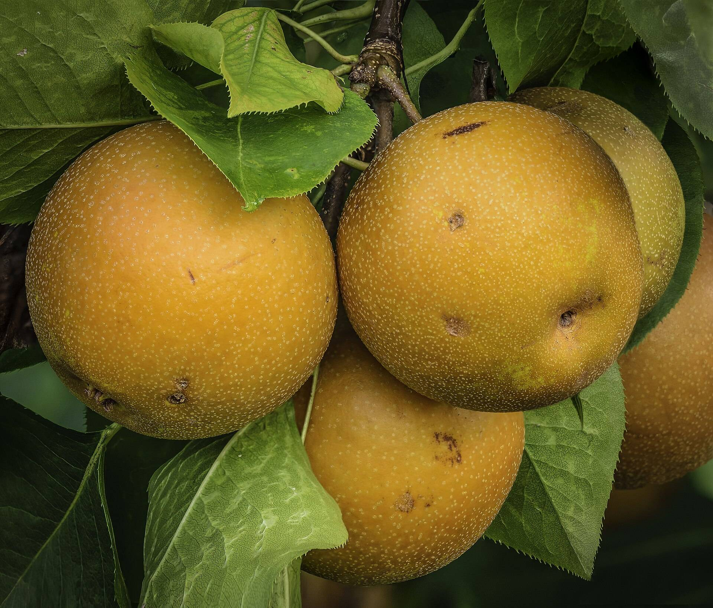

Dry perry for the longest day.

Our midsummer release from Somerset: 1,100 bottles at £16.

Pears, picked late, pressed slow.
From one orchard below the Quantocks. Nothing added but time.
- AprilBlossom
- OctoberPicked
- WinterPressed and laid down
- 21 JuneBottled for midsummer
A run of 1,100 bottles.
- Style
- Dry perry
- Bottle
- 750 ml
- Made
- 1,100
- Price
- £16
- Release
- Midsummer


Best opened as the sun goes down.